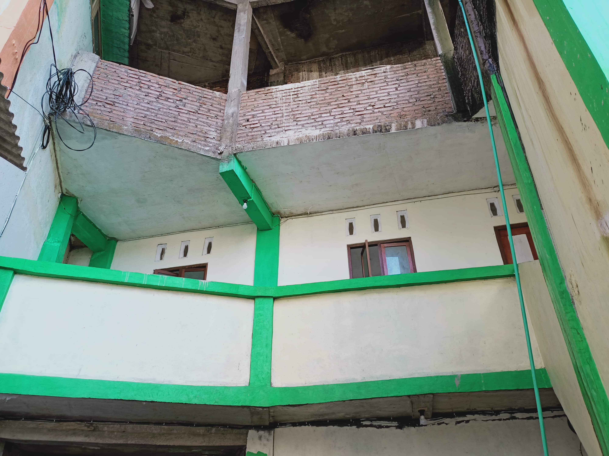
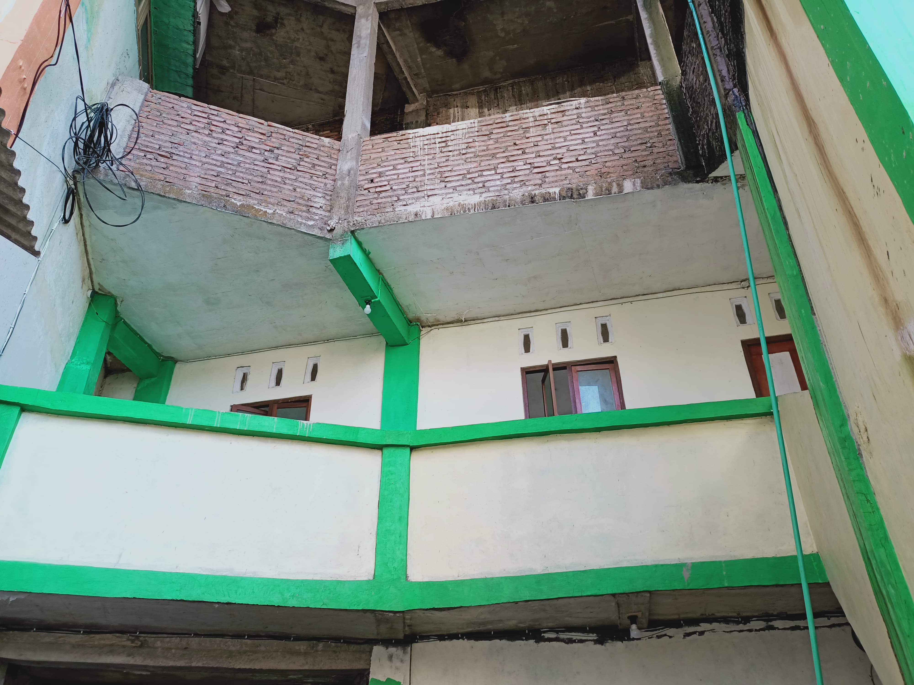

MA Darut Ta'lim merupakan lembaga pendidikan di bawah Yayasan Kholiliyah Bangsri yang berkomitmen mencetak generasi islami, berprestasi, dan siap menghadapi tantangan zaman melalui penguatan nilai-nilai keagamaan, kedisiplinan, dan karakter.
Cerdas, Unggul, Berakhlak Mulia, Berdedikasi, dan Berwawasan Qur'ani.
Meningkatkan kualitas pembelajaran, melatih keterampilan abad 21, serta membentuk peserta didik berakhlak mulia dan disiplin.
Program unggulan untuk membina hafalan Al-Qur’an secara terstruktur.
Mengembangkan kemampuan penelitian dan inovasi peserta didik.
Pramuka, Paskibra, Olahraga, Seni, dan berbagai kegiatan lainnya.
 


“Lingkungan belajar sangat nyaman dan guru-gurunya ramah.”
— Siti, Alumni
“Program tahfidznya membuat saya lebih disiplin dan semangat.”
— Ahmad, Siswa
“Madrasah yang mendukung perkembangan karakter dan prestasi.”
— Wali Murid
Alamat: Komplek Yayasan Kholiliyah Wedelan Bangsri
Email: manudata2023m@gmail.com
Telepon: 081327552996